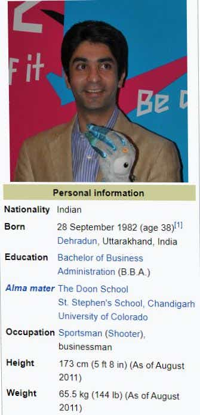

BIOGRAFAIRY
| Home
|
Science
|
Technology |
politics
|
Drama/acting
| Literature
|
Sports
|
|---|
|  |
With more than 150 medals in his 22-year career, he is the recipient of the Padma Bhushan from the Government of India[5] and is one of the top influencers of sport policy in the country.
Bindra's primary outreach to Indian sports is through the Abhinav Bindra Foundation, a non-profit organization that works to integrate sports, science, and technology into Indian sports and encourage high-performance physical training. In 2018, Bindra was bestowed with the prestigious Blue Cross, the ISSF's highest honor
At the age of 15, Bindra was the youngest participant in the 1998 Commonwealth Games. He was also the youngest Indian participant at the 2000 Summer Olympics in Sydney. At the 2000 Olympics, he achieved a score of 590, placing him 11th in the qualification round. With that score, he was not able to qualify for the finals. He was also honored with the Arjuna Award that year.
At the age of 15, Bindra was the youngest participant in the 1998 Commonwealth Games. He was also the youngest Indian participant at the 2000 Summer Olympics in Sydney. At the 2000 Olympics, he achieved a score of 590, placing him 11th in the qualification round. With that score, he was not able to qualify for the finals. He was also honored with the Arjuna Award that year.
In the 2004 Summer Olympics in Athens, he established a new Olympic record but did not win a medal. He scored 597 in the qualification round and placed third, preceded by Qinan Zhu (599, a new Olympic record) and Li Jie (598). In the finals, Abhinav finished with 97.6 points, last in the field of eight; he was the only player with less than 100 points and dropped to the seventh position.
After these successes, a severe back injury incapacitated him and he was unable to lift a rifle for a year, interrupting his preparation for the 2008 Summer Olympics. Bindra returned to compete and won the title at the 2006 ISSF World Shooting Championships with a score of 699.1, qualifying him for the 2008 Summer Olympics
At the 2008 Summer Olympics in Beijing, Bindra titled in the men's 10-meter air rifle event, shooting a total of 700.5. He scored 596 in the qualifying round, finishing fourth, and outscored all other shooters in the finals with a round of 104.5. In the finals, he started with a shot of 10.7, and all others never dipped below 10.0.[13] Bindra was tied with Henri Häkkinen heading into his final shot. Bindra scored his highest of the finals – 10.8 – while Hakkinen shot 9.7 to settle for the bronze medal.
At the 2010 Commonwealth Games in New Delhi, Bindra was honored as the national flag-bearer at the opening ceremony. He also was given the honor of taking the athletes' oath on behalf of the 6,700 participants from 71 countries and territories. Bindra, along with Gagan Narang, shot in unison to set a games record of 1,193 points in the 10-meter air rifle pairs event for men to win India's inaugural gold medal at the 19th Commonwealth Games. He brought home a silver medal in the individual event.
Bindra has a bachelor's degree in business administration from the University of Colorado.[18] Bindra is the CEO of Abhinav Futuristics Private Limited, an organization that works to bring science and technology into the sport and healthcare sectors. With ABTP, a group of sports science and advanced physical medicine and rehabilitation (PMR) centers, the organization has served more than 5,000 athletes and medical patients. Under the Abhinav Bindra Foundation, a non-profit initiative, athletes are provided access to the latest sports technology and high-performance physical training for free. Many athletes from sports such as swimming, badminton, boxing, and para-athletics have benefited from the foundation's various programs. In 2020, he launched the Abhinav Bindra Sports Medicine and Research Institute at Bhubaneswar with the mission of bringing Global Best Practice to the Indian Healthcare and Sports Medicine Sector.
At the 2016 Summer Olympics in Rio de Janeiro, Bindra finished fourth in the finals of the 10-meter air rifle event. He also served as a goodwill ambassador for the Rio 2016 Olympics Indian contingent, having been appointed to that post by the Indian Olympics Association (IOA). On September 5, 2016, he announced his retirement.
Since his retirement, Bindra has been involved with the TOP Scheme, one of India's most significant policies for athlete development. He has also been a part of the ISSF and IOC Athlete Commissions, where he has worked for the development of athletes through mental health, financial stability, and entrepreneurship initiatives.